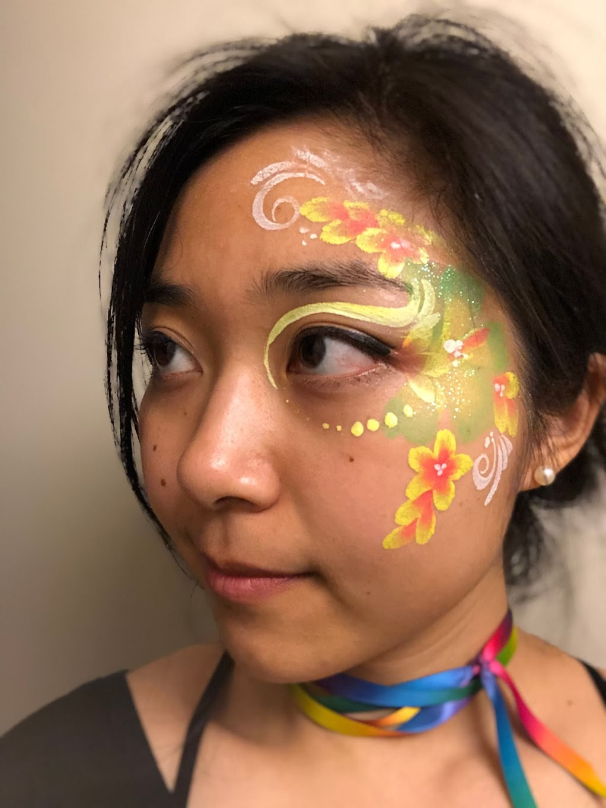

We're Miles Brundage, Katherine Lee, and Ludwig Schubert.
sunday dinner is OFF nov 17
But we'll see you for our housewarming nov 24th! 2-8pm. Please spread yourselves out through the whole time period!
We're looking for another housemate, so ping us if you/a friend are looking!
... photos here
Contributions, food, or drinks to keep Sunday dinners sustainable are welcome but entirely unnecessary.
Katherine's currently excited to cook:
- shepards pie
- nancy's incrrrredible vegan chocolate chip cookies
- di's lentil curry
- scallion flowery buns
- ethiopian kitfo (with impossible beef)
- vegan ice cream
- cheeeeesecake
- rosemary shortbread
Upcoming events:
- warm! our! house!: Nov 24
Books we've read
- Red Plenty: Inside the Fifties' Soviet Dream, Francis Spufford
- The Brief and Wonderous Life of Oscar Wao, Junot DÃaz
- Where the Sidewalk Ends, Shel Silverstein
- Other Minds, Peter Godfrey-Smith
- Lincoln in the Bardo, George Saunders
But remember the first rule of rogue book club: there are no rules in rogue book club. Read whetever you want.
humans
past events
- anti-anti rogue books; oct 6
- pottery and mid autumn festival celebration w/ mooncakes; sep 14
- deliberate books; aug 18
- dumpling making; aug 11, 2019
- video watching; aug 4, 2019
- slightly more rogue books; may 11, 2019